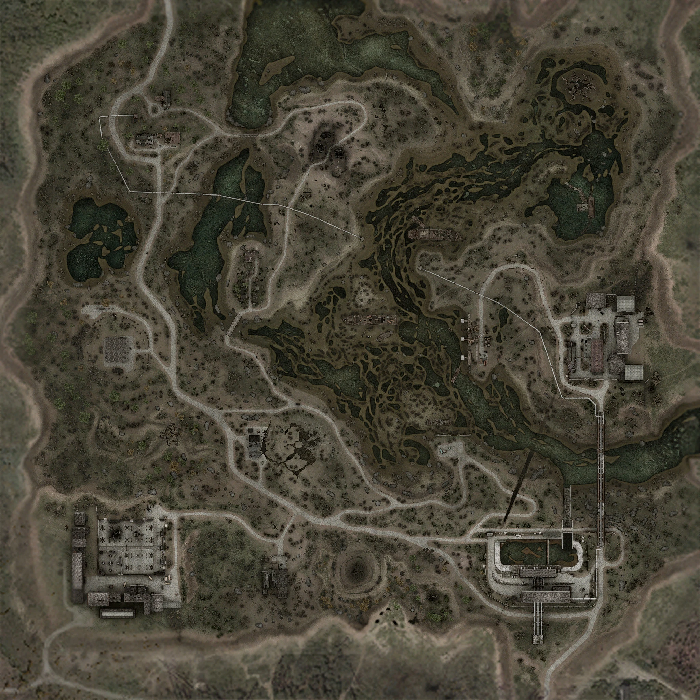
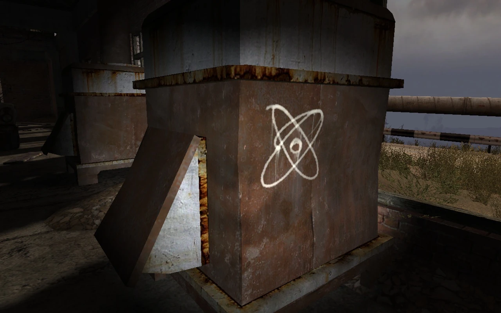

Затон — локация центральной Зоны. На юге граничит с окрестностями «Юпитера», а на юго-востоке — с Припятью. Территория стала осваиваться после отключения Стрелком Радара. Место активного противостояния вольных сталкеров и бандитов. Затон является руслом высохшего рукава реки Припять, о чём говорят многочисленные севшие на дно лодки, катера, баржи и сухогрузы.
музыка
день
ночь
Карта
Затон представляет собой русло пересохшей реки с холмистой местностью в окрестностях. На локации имеется несколько крупных аномальных зон и сооружений, таким образом, мест, где можно поживиться и переждать выброс, было достаточно. Это привлекает массу сталкеров, которые, в свою очередь, привлекают массу бандитов. Центром жизни на локации является остов сухогруза «Скадовск». Главным торговцем на локации является бармен Борода, с которым конкурирует торговец оружием, экипировкой и информацией Сыч, явно симпатизирующий местному пахану Султану. Через всю локацию с запада на юго-восток тянется трубопровод.
Сухогруз «Скадовск» был оставлен в ЧЗО в рамках программы ликвидации последствий аварии на ЧАЭС. Река, в которой он находился, со временем обмелела, образовав территорию, известную как Затон. «Скадовск» мало сохранился к моменту обнаружения его вольными сталкерами — Бородой и Глухарём, — пришедших практически сразу после отключения «Выжигателя мозгов» Стрелком. Однако кормовая часть судна находится в пригодном для сталкерской жизни состоянии, и Борода с Глухарём, решив, что путь в Припять всё равно пока не разведан, начали обосновываться. В бывшем трюме был организован бар, ярусом выше — спальные места, на этом же ярусе расположился торговец Сыч, предоставляющий такой ценный товар, как оружие и информация, по соседству с ним — опытный медик Тремор, и в дальнем углу устроил мастерскую техник Кардан, ярусом выше, на уровне палубы расположился торговец эксклюзивным оружием и экипировкой Шустрый. Сами же основатели лагеря также распределили роли: Борода стал барменом и скупщиком артефактов, Глухарь же стал местным «шерифом». В этот же промежуток времени происходило противостояние сталкерской братии и банды Султана. В конечном итоге, бандитам стало понятно, что ничего изменить им не удастся, и было заключено первое известное перемирие между сталкерами и бандитами. Однако борьба не прекращалась вне сухогруза, а также приобретала подпольный характер. Всё осложнялось также тем, что торговец Сыч сам был не прочь захватить бизнес Бороды, что сближало его с Султаном. От действий игрока зависит то, в какую сторону сместится баланс. Имеется и вариант того, что действия игрока баланс не изменят. Также сухогруз является точкой эвакуации Б2 в рамках операции «Фарватер».
Она же «старая баржа». Полусумасшедший сталкер Ной, боясь «Волны мутантов», превратил затонувшую баржу в цитадель, которую гордо называет «Ковчег». Живёт там один с псевдособакой Лесси. Из-за его поведения сталкеры обходят его стороной. Но однажды, из-за стечения обстоятельств, баржа становится крупным форпостом сталкеров, как об этом и мечтал Ной.
Развалины старого хутора, кишащие «жарками». Присутствует заскриптованный артефакт «Кристалл». На чердаке одного из сгоревших домов в качестве тайника лежит снайперская винтовка «Винтарь-ВС».
На счёт плато громко сказано. Плоская возвышенность, на которую невозможно взобраться нормальным способом. Единственным способом попасть туда является телепорт на сгоревшем хуторе, из сталкеров этот путь известен только Ною, а впоследствии и Дегтярёву. Является местом падения одного из вертолётов «Скат», участвовавших в операции «Фарватер». Имеются пещеры, в которых обитает множество снорков. Соседствует со станцией переработки отходов и аномальной зоной «Цирк».
Тут много мест с сильным радиационным фоном и довольно часто ошиваются мутанты — чаще всего кабаны и плоти, а порой, охотясь на последних, захаживают кровососы, поэтому без причины сюда лучше не ходить. На крыше есть тайник, к которому можно подобраться, поднявшись на топливную цистерну и перепрыгнув на крышу. Вы найдёте там «Зарю» и водку. Рядом с заправкой расположен разлом.
Является результатом деятельности аномальной зоны «Коготь». В нём лежит свалившийся туда после выброса «Запорожец», в котором сделал тайник Коряга. Разлом представляет собой сложную систему пещер с двумя входами и одним выходом. В него можно попасть, свалившись в провал возле заправки, или войти в дыру возле «Когтя», выйти же можно только через эту дыру. Пещеры облюбовали снорки, коих там с два десятка. К счастью, они изредка вылазят оттуда. Чаще всего это пара снорков, с которыми легко справляется отряд вольных сталкеров или бандитов, по своим делам оказавшихся возле аномалии.
Старая станция переработки отходов. Располагается на юге Затона. Это два больших сооружения в несколько этажей с неработающей системой водоочистки и обширным резервуаром-отстойником, раньше служившим для сбора уже очищенной воды и слива по широкому водостоку в Припять. Здесь заканчивается идущий через весь Затон трубопровод. Контролируется небольшой группой наёмников, возглавляемой Хребтом и Крюком. Наёмники не любят непрошеных гостей и после предупреждения открывают огонь. Единственная серьёзная причина, по которой сюда может забросить Дегтярёва — это выполнение задания, выданного Сычом, на добычу информации, которая содержится в ноутбуке, находящемся на втором этаже. Станция обнесена бетонным забором, кое-где плиты упали. Если убить всех наёмников, бандиты и вольные сталкеры будут использовать станцию как место для привала. В сливных трубах можно переждать выброс.
Бывшие цеха подстанции, ставшей впоследствии «Железным лесом». Занята отрядом наёмников под предводительством Тесака. Отряд менее агрессивен, чем отряд на станции переработки отходов, и если принести им еды, то Тесак позволит побродить по помещениям и двору. Что позволит найти инструменты для тонкой работы для Кардана.
Старая лесопилка на северо-западе Затона. Очень привлекает внимание зомбированных. Состоит из конторы, склада и кочегарки. На чердаке конторы можно найти много всего: водка, энергетики, патроны, гранаты, а также инструменты для грубой работы для Кардана. В некоторых местах сильная радиация, аномалий нет. Здесь берёт своё начало трубопровод.
«Шевченко» — один из двух затонувших сухогрузов, находящихся на Затоне. «Шевченко» довольно сильно пострадал — сейчас корабль практически переломлен пополам. Однако кормовая часть выглядит достаточно прочной, а на верхней палубе сохранились пустые контейнеры из-под груза. Был назван в честь украинского поэта и художника Тараса Шевченко. В районе кормы имеется разлом, шириной примерно в 2—5 метров. Правый борт сильно повреждён. При входе внутрь, повернув направо, мы видим лестницу, которая ведёт в рубку, где разведён костёр. «Шевченко» — «силовая точка» сталкеров: здесь они под руководством Спартака оборонялись от наездов бандитов и организовывали всевозможную противобандитскую деятельность. Лагерь менее удобный, чем «Скадовск»: нет специализированных людей — барменов, торгашей, медиков и прочих. Нет дверей закрывающихся в случае тревоги. Нет больших спальных мест. Перед лестницей обычно дежурит сталкер-часовой.
ВНЗ «Круг» — станция возвратно-наклонного зондирования ионосферы «Круг». «Круг» — вспомогательная система для ЗГРЛС. Система имеет вид двух кругов диаметром 300 метров, состоящих из 240-ка десятиметровых антенн (по 120 на круг). В центре круга находится низкое одноэтажное здание с приёмной аппаратурой, на крыше здания находится центральная антенна. Это своеобразный целеуказатель для «больших» антенн ЗГРЛС. Находится на Затоне недалеко от аномалии «Соснодуб». По канализационной трубе из подвалов ВНЗ вы выйдете в «Топь», где упал вертолёт «Скат-5». Под зданием находится логово кровососов, которое и должны ликвидировать Дегтярёв и Глухарь. В логове 11 особей. 2-е патрулируют здание, а 9 спят. Одна сцена с кровососом была вырезана: ранее планировалось, что в логове будет третий не спящий кровосос, который будет взаимодействовать с геометрией: он карабкался по отвесной стене и должен был выскочить из дыры в полу.
Секретный испытательный цех под подстанцией, ставшей известной как «Железный лес». Ключ-карту для входа имел у себя Кардан, участвовавший в разработке изделия № 62. В этом же цеху гаусс-пушка испытывалась, в частности, там до сих пор стоит гигантская версия оной, до прихода Дегтярёва, посетившего цех в рамках расследования причин провала операции «Фарватер», в нём обитал десяток зомбированных сталкеров и псевдогигант.
Заброшенный пионерский лагерь. Здесь находятся большая сцена с навесом и несколько домов, которые благополучно разваливаются, имеется тайник. Здесь любят селиться псевдособаки, слепые псы и плоти. Также здесь Гонта, Гармата и Дегтярёв, по рекомендации Зверобоя, в особом квесте охотились на химеру, ранившую Краба.
Довольно загадочное и опасное место. Когда-то здесь ехала военная колонна, но что-то случилось и все машины встали. Самое странное, что колонна не повреждена и ни одна расположенная на мосту аномалия — а тут их очень много — её не тронула. Cо временем, из-за ветхости, часть моста обвалилась и командирская машина упала вниз. Из-за присутствия огромного количества аномалий типа «Трамплин» и «Воронка» место с виду совершенно непроходимо, но между аномалиями есть тропинка, невидимая глазу. Пройти можно, если вооружиться детектором и болтами. Артефакты, к сожалению, отсутствуют. Мост ведёт от лесничества до станции переработки отходов. В кузове грузовика ЗИЛ-131 находится контейнер с невропатологическим газом, который можно использовать, чтобы нейтрализовать кровососов под ВНЗ «Круг».
Мелководное, довольно обширное затопленное пространство на крайнем севере локации. Озеро-старица. Из объектов имеется лодочный причал.
Примечательная пещера, которая находится в разломе недалеко от сгоревшего хутора. Вход в неё имеет вид гигантского отпечатка куриной лапы. Если подойти к ней, то можно услышать в голове зловещий мужской голос, предупреждающий: «Уходи отсюда, мужик…». Если же осмелиться войти внутрь, то придётся столкнуться с контролёром.
Часть озера (на севере) с прилегающим берегом находится за пределами карты высокого разрешения, и хотя она доступна для посещения, метка игрока там не отображается. В ЧЗО имеется реальный одноимённый прототип сухогруза «Скадовск», правда, хуже сохранившийся. Интересно, что на территории Украины, точнее, в Херсонской области есть город с названием Скадовск. Сухогруз и был назван в честь этого курортного города. В отличие от отряда Крюка и Хребта на станции переработки отходов, все члены отряда Тесака на цехах подстанции имеют оригинальные клички. В лесничестве когда-то побывали бойцы группировки «Монолит» и сделали тайник, в котором лежат медикаменты и боеприпасы к гаусс-пушке. В реальности имеется целых два моста имени Преображенского, соединяющих правый и левый берега Днепра через остров Хортица в городе Запорожье. Прототипом моста в игре стал однопролётный мост через рукав «Старый Днепр». В реальности он в несколько раз больше, а сверху идёт не трубопровод, а железнодорожные пути.
@все права защищены 2025г